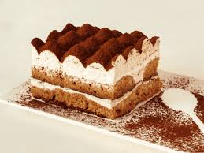

Dans ce blog, nous allons apprendre petit à petit à cuisiner comme des chefs !
Pour chaque recette, nous commencerons par :
Préparez les ingridients nécessaires
Puis, cuisinez
Et je vous donnerai, quelques conseils pour avoir un résultats encore meilleur
Avant je vais vous parler de mon gâteau préféré, de ses origines, d'un lieu que j'aime particulièrement et pour finir d'un petit conseil que j'applique toujours pour faire un bon gâteaux.
Mon tout premier site Internet !
N'hésitez pas à me donner des conseils ou des retours sur mon site !
C'est grâce à kods que j'ai réussi à créer ce site ! Je recommande à chacun... C'est simple et efficace !
Voici le lien du site "kods"
Mon gâteau préféré:
J'adore le tiramisu ! C'est mon gâteau préféré, voilà pourquoi aujourd'hui je vais vous apprendre à faire les meilleurs tiramisus !

On peut trouver plein de recettes de gâteau sur google. Cliquez ici
Mon lieu préféré : DisneyLand
N'hésitez pas à aller à DisneyLand, ils font des desserts à tomber ! De plus, quoi de mieux que manger des gateaux devant le chateau féerique de disney !
Voici un plan de DisneyLand, dîtes moi si vous êtes proche ou non de Disney !
Travaillez en musique !
J'adore Dua Lipa ! Vous pouvez aller voir le clip de ma musique préférée (fever !)
Et les paroles :
Before you came around, I was doing just fine
Usually, usually, usually, I don't pay no mind
And when it came down, I was looking in your eyes
Suddenly, suddenly, suddenly I can feel it inside
Je conseille à tous de cuisine en musique, cela motive et nous détend. N'oubliez, cuisiner doit être un moment de plaisir...